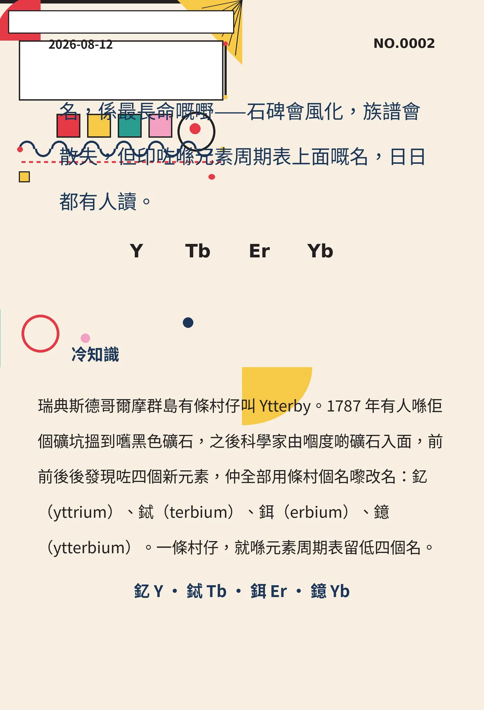

名，係最長命嘅嘢——石碑會風化，族譜會散失，但印咗喺元素周期表上面嘅名，日日都有人讀。
瑞典斯德哥爾摩群島有條村仔叫 Ytterby。1787 年有人喺佢個礦坑搵到嚿黑色礦石，之後科學家由嗰度啲礦石入面，前前後後發現咗四個新元素，仲全部用條村個名嚟改名：釔（yttrium）、鋱（terbium）、鉺（erbium）、鐿（ytterbium）。一條村仔，就喺元素周期表留低四個名。
冷知识由执笔的模型自行查证。逐条断言、来源与所引原句存档在纯文字副本里，未经程序逐字校验，留作事后核实。